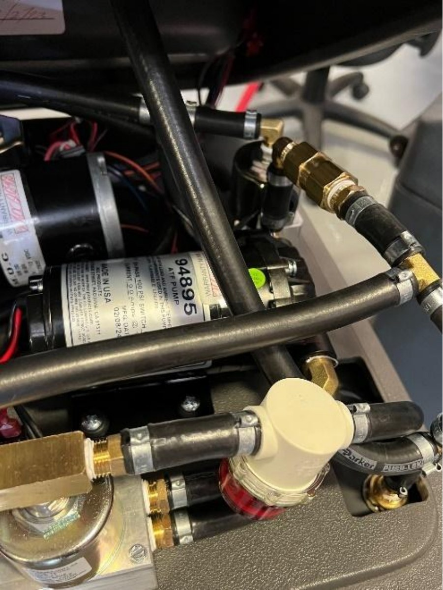
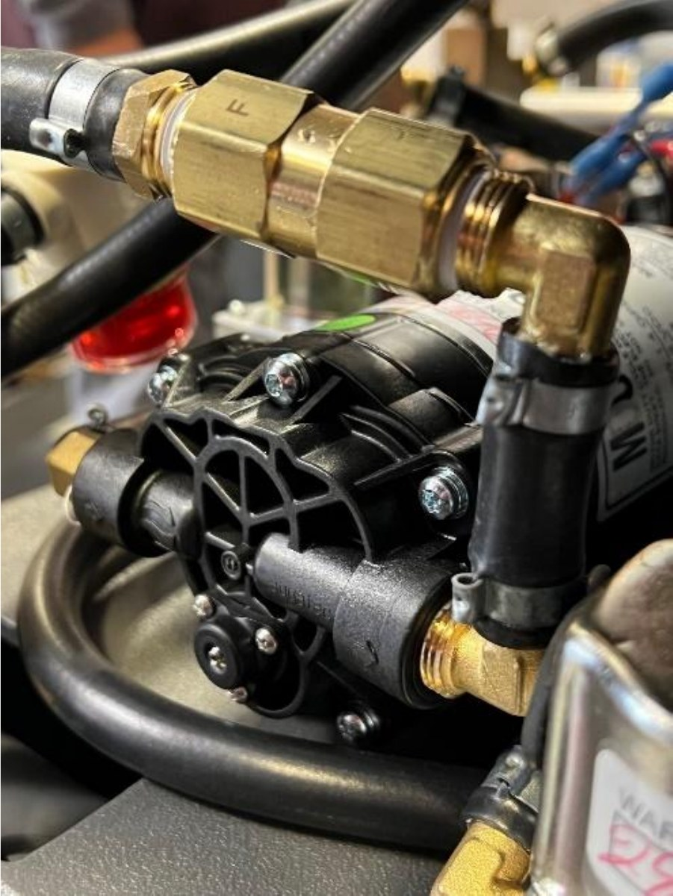

Doc no. MOC-TSB-24-03 // Vol. 24 No. 03 // Aug 1, 2024 // Transmission
Check Valve for ATF Machines
A new transmission machine upgrade kit that adds a check valve, to prevent backflow and keep the correct fill level on vehicles with high-pressure systems. It fits every transmission machine that services vehicles with high-pressure systems.
What's new
Vehicles with 50 psi or more line pressure need this check valve to hold a 1-to-1 fluid level during the service. Without it, fluid from the vehicle can flow back past the pump and valves in loop mode and leave the transmission underfilled when the service is complete.
The kit includes barb fittings installed in the check valve, 2 pinch clamps, and instructions showing where to cut the hose to install it.
Check the fluid level both before and after the service.
Contact
For more information, contact the Machine & Equipment Department at 866.244.6621.


Part numbers
| Part No. | Description | Notes |
|---|---|---|
| 94797 | Kit, ATF, Backflow Prevention | Check valve with barb fittings, 2 pinch clamps, instructions |